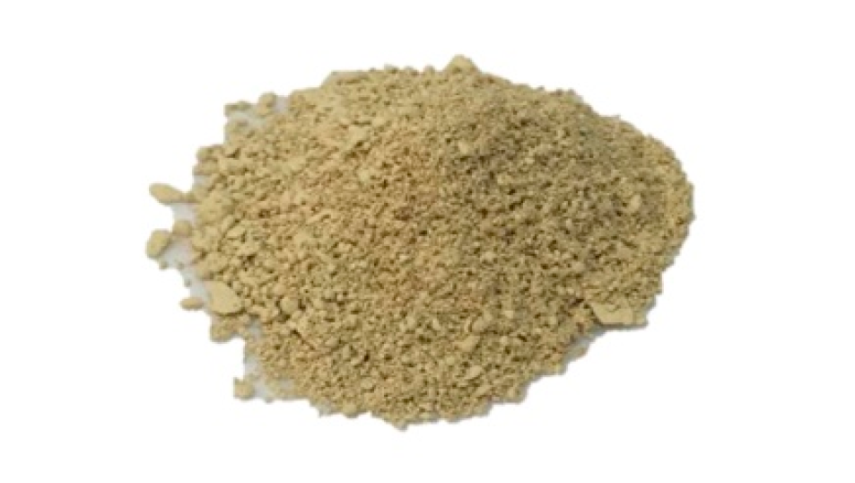

🧊
尚未导入结构
点击左侧第 ⓪ 步「导入 g-C3N4 结构」按钮
一键载入服务器标准结构，导入后此处显示三维晶体模型
一键载入服务器标准结构，导入后此处显示三维晶体模型
计算建模晶体结构（块体 g-C3N4 · R3m 三层 · a=4.78 Å · c=9.97 Å · 21 原子/胞）
C
N
🔬 实验样品光学照片

g-C3N4 粉末实物：三聚氰胺 550 °C 热聚合产物，呈特征黄色
图源：Micromachines 2017, 8, 175, Fig. 2C（CC BY 4.0）
测试一 · 截断能收敛曲线（总能 & 耗时）
测试二 · K 点密度收敛曲线（总能 & 耗时）
最终参数选择（判读 · 20 分）
收敛测试数据汇总：完成计算后此处显示你自己逐档测得的总能与耗时。